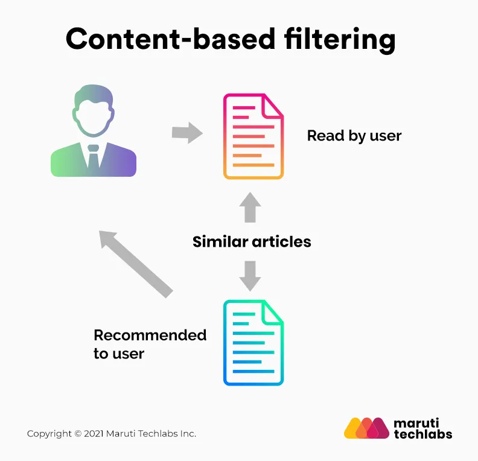
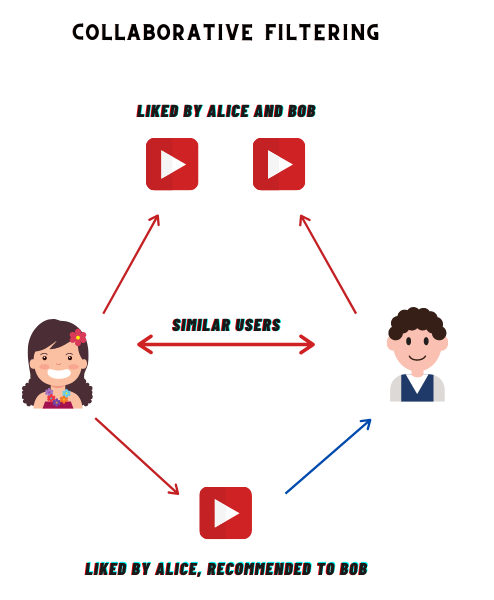

Unlimited movies,TV shows and more you like :)
Machine Learning project - Recommender System
Keerthana G

Recommender system that relies on the similarity between items to make recommendations. For example, if you’re looking for a new movie to watch, a content-based recommender system might recommend movies that are similar to ones you’ve watched in the past.
 Content-Based Recommendation System TYPE 1A collaborative filtering recommender system is a type of machine learning algorithm that makes predictions about what a user might want to buy or watch based on the past behavior of other users. The algorithm looks at the items that other users with similar taste have purchased or rated highly, and recommends those items to the new user.
 Collaborative Filtering Recommendation System TYPE 2Cosine Similarity: Cosine of the angle between the two vectors of the item, vectors of A and B is calculated for
imputing similarity. If the vectors are closer, then small will be the angle and large will be the cosine.
Jaccard Similarity: Users who have rated item A and B divided by the total number of users who have rated either A or B
gives us the similarity. It is used for comparing the similarity.
Similarity Score :
How does it decide which item is most similar to the item user likes? Here come the similarity scores.
It is a numerical value ranges between zero to one which helps to determine how much two items are similar to each other
on a scale of zero to one. This similarity score is obtained measuring the similarity between the text details of both
of the items. So, similarity score is the measure of similarity between given text details of two items. This can be
done by cosine-similarity.
The system finds out the users who have the same sort of taste of purchasing products and similarity between users is computed based upon the purchase behavior.
User-User Collaborative filtering
The system checks the items that are similar to the items the user bought. The similarity between different items is computed based on the items and not the users for the prediction.
Item-Item Collaborative filtering